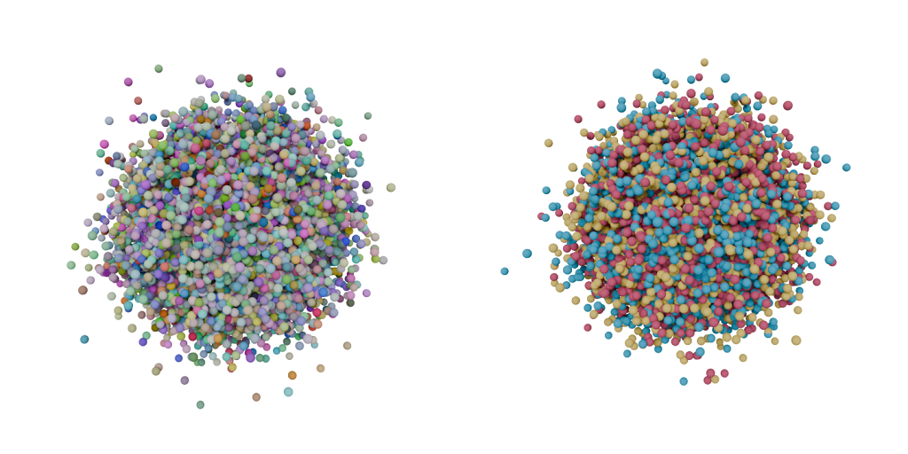
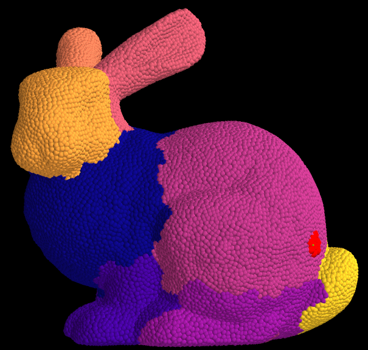
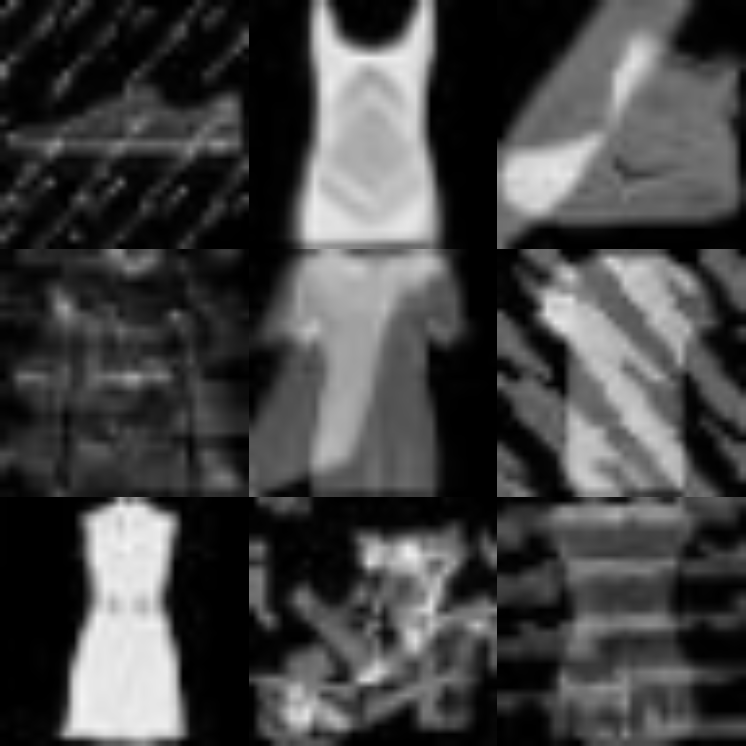
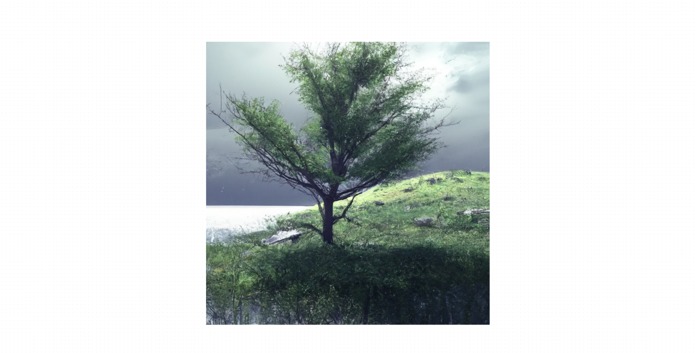
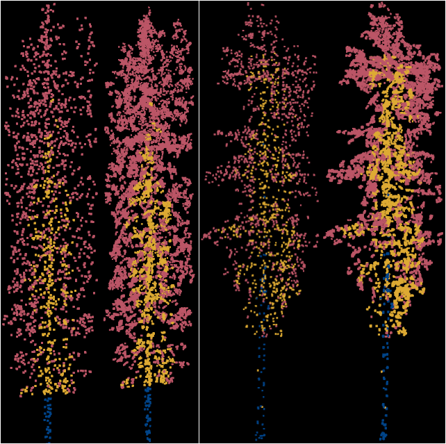
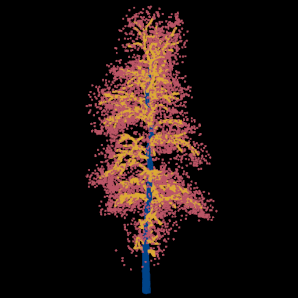
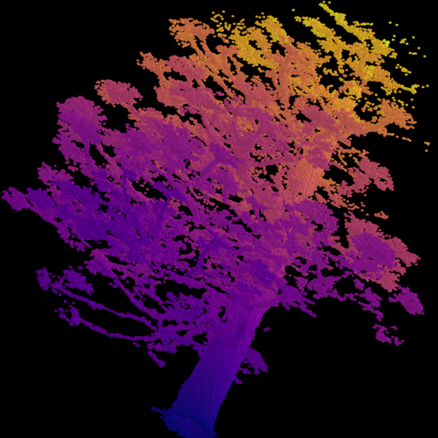
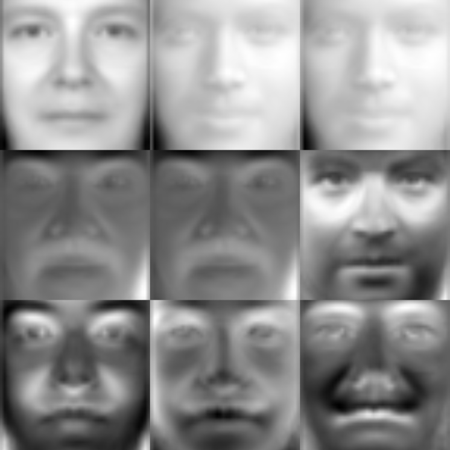

Research
My work spans LiDAR point cloud understanding, deep learning for 3D data, and computational tools for forest ecology research.
Published Work

Point-RTD: Replaced Token Denoising for Pretraining Transformer Models on Point Clouds
A new method for teaching AI to better understand 3D data through replaced token denoising pretraining, leading to stronger performance in tasks like object recognition and scene understanding.

Guided and Unguided Conditional Diffusion Mechanisms for Structured and Semantically-Aware 3D Point Cloud Generation
A generative AI method that creates realistic 3D shapes with semantic awareness — ensuring objects like chairs have correctly represented seats, legs, and backrests. Applications span robotics, remote sensing, and digital design.

LiDAR Toolkit: Scalable and Efficient LiDAR Simulation for Computational Research in Unreal Engine 5
A free and open-source Unreal Engine 5 plugin designed to help scientists generate realistic point cloud LiDAR scans of synthetic objects, narrowing the gap between synthetic and real-world data distributions.

Generating Synthetic Tree Point Clouds for Deep Learning Applications in Remote Sensing
Covers the synthetic tree point cloud creation process and evaluates feasibility in a part-segmentation task to classify points as trunk, branch, or leaf across 5 well-known models.
A Comprehensive Overview of Deep Learning Techniques for 3D Point Cloud Classification and Semantic Segmentation
An in-depth survey published in Machine Vision and Applications covering use cases, open challenges, data modalities, model types, datasets, evaluation metrics, and learning strategies for point cloud processing.


Classification of Rigid and Non-Rigid Transformations with Autoencoder Representations
A novel approach for classifying rigid and non-rigid transformations using autoencoder latent space representations, published in the proceedings of IEEE ICIP 2021.
Research Projects

SpeedTree Python Wrappers for Data Science
Python bindings for working with SpeedTree models in data science pipelines.

Augmenting Coverage: Label Propagation within Clusters
Methods for expanding annotation coverage through cluster-based label propagation.

Tree-Part Segmentation with Deep Learning
Deep learning models for segmenting individual tree components from point cloud data.

Species Classification using Voxel Density Rasters
Voxel-based density representations for classifying tree species from LiDAR data.
Other Projects

PCA Eigen Faces for Facial Reconstruction and Recognition
Reconstructing facial images by decomposing them into eigenface basis vectors. Commonly used in facial recognition systems for efficient comparison of coefficients.
Skin Classification using MLE and GDA
Classifying skin pixels using Maximum Likelihood Estimation and Gaussian Discriminant Analysis, with applications in face detection, surveillance, and medical imaging.